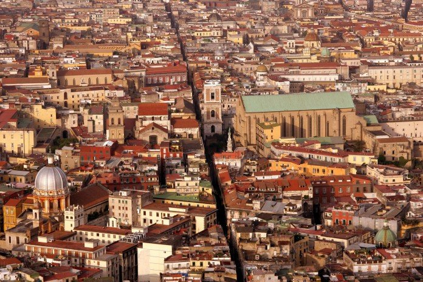
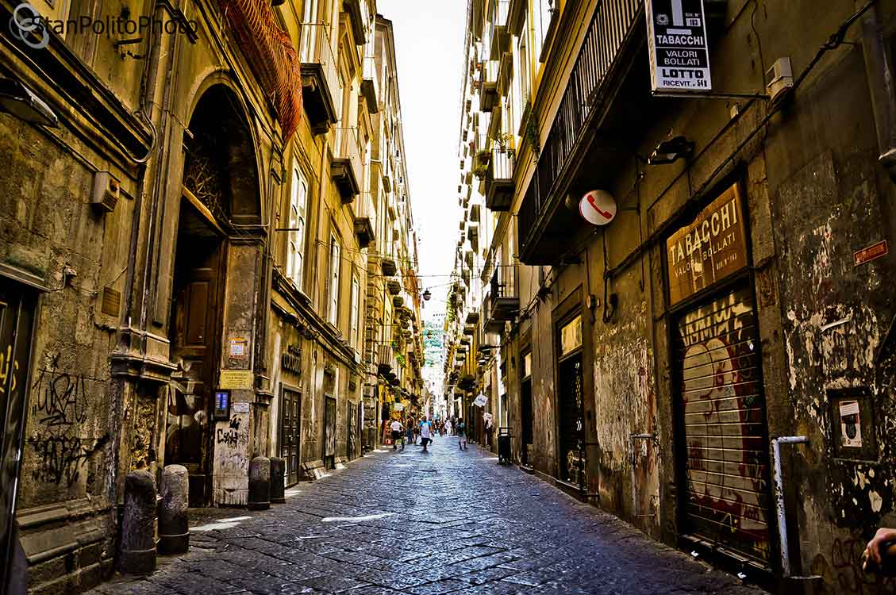

Il Gran Cono del Vesuvio
L'escursione al cratere è un'esperienza che lascia il segno. Salendo lungo il sentiero del Gran Cono (quota 1.281 m), il panorama si apre sulla baia di Napoli e su Pompei — la stessa vista che il vulcano ha del suo stesso delitto.


Capolavori nascosti nel Centro Storico
Tre gemme concentrate nel cuore antico di Napoli: il Cristo Velato di Sanartino, scultura che sembra tessuto vero anziché marmo; il Chiostro di Santa Chiara con le sue ceramiche maiolicate; e la stazione Toledo, già eletta "più bella d'Europa" per le sue installazioni di arte contemporanea.
Chiesa di Santa Luciella ai Librai: Piccola chiesa medievale nel cuore dei Decumani. La sua fama è legata al "teschio con le orecchie" custodito nell'ipogeo: un cranio del '600 con una rarissima conformazione ossea che lo fa sembrare dotato di orecchie, diventato per secoli oggetto del tipico culto napoletano delle "Anime Pezzentelle". Biglietto d'ingresso 5€.
Chiesa di Santa Maria la Nova: Imponente complesso francescano fondato nel 1279 da Carlo I d'Angiò nel cuore del centro storico, con una chiesa riccamente decorata con cappelle barocche, un magnifico soffitto ligneo dorato e un chiostro suggestivo. La sua fama è legata a una leggenda affascinante: nel chiostro potrebbe essere sepolto Vlad l'Impalatore, il principe di Valacchia che ispirò il mito di Dracula — teoria supportata da alcuni studiosi italiani e dall'Università di Tallinn. Biglietto d'ingresso 5€ (ridotto 3€), aperta tutti i giorni 9:00–17:00


🕐 Orari Chiostro: Dal lunedi al sabato 9:30-17:00, domenica 10:00-14:00.
🕐 Orari Chiesa: Dal lunedi alla domenica 7:45-12:45 e 16:40-20:00.
Spaccanapoli & San Gregorio Armeno
La sera si passeggia lungo Spaccanapoli — la retta via che taglia la città come un bisturi — tra chiese barocche, librerie antiche e bancarelle. E poi San Gregorio Armeno, la via dei maestri presepisti: anche fuori Natale, i pastori e le botteghe artigiane sono un mondo a sé. Vicino a San Gregorio Armeno si trova la piazza Gerolomini con il murale di Bansky.

